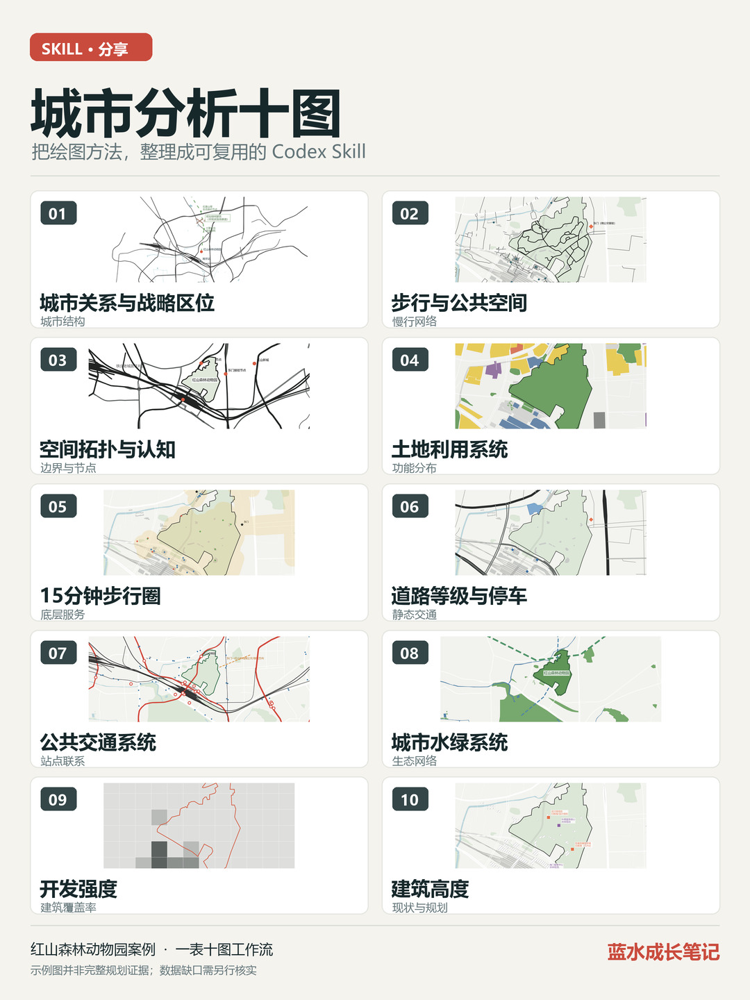

城市关系
定位基地与城市结构、交通和生态节点的关系。
把基地研究中的数据核查、尺度选择、制图表达与证据边界，整理成一个可复用的 Codex Skill。
示例：南京红山森林动物园 · 方法可迁移，数据需逐场地核实

先建立数据与证据表，再按研究问题选择尺度和数据，不要求每张图都填满。
定位基地与城市结构、交通和生态节点的关系。
识别步行路径、开放空间和可用入口。
梳理边界、廊道、节点和认知结构。
区分现状功能、规划用地与未知地块。
以路网可达性分析底层服务机会。
表达道路等级、交叉口与停车供给。
连接站点、线路与场地入口。
识别公园、水体与生态廊道。
有可靠数据才表达容积率；可用覆盖率等指标替代并明确标注。
区分已建、规划与未知高度，避免推测成事实。
在下方逐个查看文件，将 urban-design-ten-maps 文件夹放到项目的 .agents/skills/ 中。
准备基地位置、红线、任务书、参考案例，以及已有 CAD/GIS、官方资料或开放数据。
先请 Codex 核对位置、比例尺、来源和缺失数据，再分图绘制与复核。
使用 $urban-design-ten-maps，针对我的基地先建立数据与证据表，再按数据可得性绘制城市分析十图。请逐图注明尺度、来源、现状或规划状态、未知区域和需复核事项。先画第一张供我核对位置与比例尺。
仓库保留原始文件结构。网页本身也可作为 README，发布到 GitHub Pages 后即可分享一个链接。
这套 Skill 是方法，不附带城市数据库。红山动物园示例的第 9 图表达建筑覆盖率，并非法定容积率；第 10 图的可靠建筑高度资料不足，未知处保持未知。OSM 的 POI、停车、营业信息与过街信息也可能遗漏。正式设计请结合官方规划、CAD/GIS 与实地核查。
在开放地理数据较完整的地区，十图可以更顺畅地展开；数据不足时，保留空白和复核清单，比补出未经证实的结论更有价值。